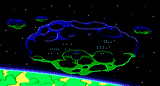
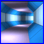
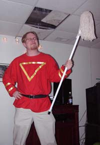
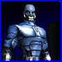
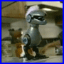
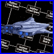

We've had
some anxious days but we came through. We made it. SpaceQuest.Net has
successfully moved to her new home! Thanks a million to those who made a
donation and to those who are in the process of sending out theirs!
We've had
some anxious days but we came through. We made it. SpaceQuest.Net has
successfully moved to her new home! Thanks a million to those who made a
donation and to those who are in the process of sending out theirs!This page is here for reference only. I do not guarantee the information below is correct because it might be outdated. All the links and images have been removed as they might be outdated too.
Jump to the year: 2001 | 2002 | 2003 | 2004 | 2005
The
Christmas Update -
Update: Sunday, December 26, 2004
Before
I start listing today's update, notice the awesome new top buttons! Just
move your mouse pointer over them! It was a lot of work to make them, but
worth it. Khaveen, known from the SQ3VGA project, is working with me on some
new exciting buttons and banners, which will be released somewhere in 2005.
I've got lots of new stuff for you today. Two new Space Quest 6 Spoof & References, a new Space Quest 5 Spoof & Reference and a new Space Quest 1 Spoof & Reference. I've added a high resolution cover for the InterAction Spring 1993 page and removed the pop up video screens for all but the SQ7 video.
Next are updates to the Fanfiction section; I've added information, news and screen shots from the upcoming fangames section. But more about that with the next update in January. I've also added a complete new page to the fanfiction section. It's about Space Quest 2 remake images by "Blackthorne519", "JLM5", "Khaveen", "moonlit" (my favorite images, recognizible from the sparkling fluorescent green colours) and "JayWar". I hope I haven't forgot any artists. In any case, awesome work guys! Do check out their discussion at the AGDInteractive forums.
Before I forget. I've limited the amount of traffic for the games downloads to 650 MB per visitor (IP). Make sure you do not download more than 650 MB or you'll get banned from the server! There's a restriction of 500MB for the rest of the website. Please note that these are most generous bandwidth amounts. With normal surfing you'll never cross that amount.
Ooh, and.... Happy Christmas! I wish you a very happy and healthy 2005.
New
Server! -
News: Saturday, December 18, 2004
We've had
some anxious days but we came through. We made it. SpaceQuest.Net has
successfully moved to her new home! Thanks a million to those who made a
donation and to those who are in the process of sending out theirs!
I've decided to go back to Eperfect.net; the best hosting company. They hosted SpaceQuest.Net in the past but I reluctantly left because the website had outgrown their largest available hosting solution. When I contacted them about a week ago with the question if they could set up a custom solution specifically for my website, they said "Sure we can!". What's more, they're kindly sponsoring SpaceQuest.Net! They're hosting me a bit cheaper than they would normally do. Thanks to Eperfect.net I can continue offering all the games, including Space Quest 6, without any compromise! The games have been moved to their own specific hosting account, limited to no less than 170 gigabyte a month. Thank you Eperfect.net!
If you're looking for a website host or server space, then do sign up with Eperfect.net. Best quality servers and best customer support I've ever seen. Between you and me, that is saying something.
In the meantime, there's still a lot of work to be done. Please have some patience while I restore the message board, the subdomains, custom error pages and all that nonsense. I'm in the middle of setting up the games downloads (games.spacequest.net). This takes a while because it's, well you know, 1.5 gigabyte. Everything should be up and running around tomorrow evening.
If you find anything out of the ordinary then please contact me immediately. I had some problems with my FTP program so I hope there aren't any corrupted files.
Server
Issues -
News: Saturday, December 4, 2004
 Hello Space
Quest Fans,
Hello Space
Quest Fans,
I'm addressing this letter to all you Space Quest Fans out there, in particular regular SpaceQuest.Net visitors. Colin Davis just contacted me with sad news. Recently, the server has been the victim of mindless hacker attacks. To be able to protect the server against these useless and moronic acts, server costs have gone up 200%. Neither of us are able to affort that. Colin decided not renew the contract for his private server, on which SpaceQuest.Net is hosted. The server will be closed at the end of January.
Finding a new suitable host for SpaceQuest.Net won't be easy. There's a trade off to make between how much money to pay each month and the package I'll get in return. It should be clear that SpaceQuest.Net will never be able to have the server capacity it has now (unless I pay a hosting company $100 dollars a month), simply because Colin's gracious and selfless support throughout the past two years. Thank you Colin, without your support SpaceQuest.Net would never have grown into the site it is today. You will remain this website's greatest supporter.
I'm therefore turning to you, visitor, with a heavy heart. I would like to ask you to consider donating money so that I can afford a new suitable hosting solution. Simply click on the image below to make a donation using your paypal account (sign up for one if you have a credit card: it's free). Any donations of $1 and up are greatly appreciated. If you would like to donate money using the old fasion way (snail mail), please contact me for my address.
Hosting this website will cost AT LEAST $25 dollars a month. That's AT LEAST $300 dollars for just one year hosting. A sum not many students are able to afford and sadly I fall into that category. The more donations I get in, the larger server package I'll be able to afford. It's as simple as that. But make no mistake, whatever server solution I'll purchase, it won't be nearly as good as the one Colin offered me. This means the SQ6 download, for instance, will most certainly disappear. Before donating, please keep in mind that it won't be easy for me to continue updating the website in the first place. You're not donating money to help me continue updating. You will be donating to keep the website online!
Don't let SpaceQuest.Net close! We have until the end of January before they pull the plug. A satisfactory solution must be found before that time. I know many of you will be most eager to help me and I encourage everybody to send in suggestions.
The future of SpaceQuest.Net is in your very own hands. There are dark days ahead. Yours faithfully,
Frans van
Hofwegen
SpaceQuest.Net
Space
Quest Doom3 Mod -
Update & News: Saturday, November 6, 2004
 Reid
Kimball announced a new Doom3 mod on August 30th. Since Reid start working
on the
mod, he has built a
small website and got some attention over at the Doom3
gaming community. Far more interesting is a set of screenshots he has
released, which you can find on his website. This project should be closely
watched!
Update (16 November): Reid has just released a video teaser. It's simply stunning. Even more so when considering there's still a lot of work to be done. Like adding lightning, textures and descreasing the "emptyness" to create that true Sierra feeling.
On the other side of our galaxy, the good people of Vohaul Strikes Back are making good progress with their fangame and SQ7.Org is simmering along nicely as usual. Colin Davis, project manager, has recently asked for more 3D artists and programmers. So if you're extremely hot with 3D and stuff and want to work on the most ambitious fanproject ever attempted then join the project! A release date is not expected soon but then again the project doesn't have a budget. Just sit tight, it'll be done when it's done. There are a few individuals working on a new fangame called "Vohaul's Mines". Not much is known about the project but their game basically is an alternative SQ2. What if the hoovercraft that took Roger to the mines didn't crashed? Looks like we're going to find out. That is, if the game gets finished. Good old Vonster (creator of The Lost Chapter fangame) is helping out. The team has released three early beta screenshots, ranging from "very interesting" to "too cliche". None the less, it's an interesting concept for a fanproject indeed.
There you have it, fans! A total news update on the fangame scene!
To the websites updates then. I've uploaded the French version of Space Quest 4. I have a copy of Space Quest 3 translated into Chinese, but sadly one of the disks is corrupt so it's useless. I love 5.25" disks, don't you? I'm calling out to those who might have that version laying around somewhere. Or any other language / (platform) version of a game I don't have yet. Please contact me if you do... Then we also have a new SQ5 Plot Inconsistency, two SQ4 Funfacts and a new fix for SQ4. Lastly is a cool new fanimage by "Shadow".
Celebrating
Six Years Online! -
Update: Monday, October 25, 2004
Hey and
a warm welcome! Today is a very special day because SpaceQuest.Net celebrates
its 6th year online! That's 2190 days, 52560 hours, 3153600 minutes, 189216000
seconds, and still counting! Amazing how time passes by so quickly. In celebration
of 6 years online, I've got some cool updates for you.
Fanfiction finally got its well-deserved place at SpaceQuest.Net. In the Miscellaneous chapter you can now find a revamped section about the Fan Phenomena. I personally find it a bit lacking, but I'm sure that'll change in the future. Also new: the revamped contact page, two new sq5 funfacts, two new sq1 references, a sq3 funfact, a new sq5 spoof, a new sq6 spoof and last but not least the revamped about page. It now contains much more background information about the early days. Worth reading if you appreciate SpaceQuest.Net and that wacko who built the damn thing.
Also new are the split "fixes" from the "patches" sections for (nearly) every Space Quest chapter. I hope to greatly expand these pages to offer the best possible technical support a fansite has ever seen. If you don't mind me saying, we're already going in the right direction. Wouldn't you agree?
But the fans had a huge part in today's update as well. So first, let me extend my thanks to those who contributed.
Khaveen contributed the awesome Flash animation you've see on the introduction page. He also contributed the Russian versions of Space Quest 4 and 5. Bountice offered the French version of SQ6. This download is temporary and will be deleted at the end of November. Consider this download "an Anniversary special". Shadow contributed a rare SQ box for the misc chapter. Blusk contributed an excellent picture of how Roger will look upon retirement. Saving the universe does have its impact on Rog, you know. The picture can be found at the new Fan Phenomena section.
Justas made an "anniversary special" for the occasion. I can't help but to wonder what the true reason was for making this flash animation. Recently, Justas started experimenting with Flash and it seems nobody has noticed his work, so obviously the best way to get attention is to exploit SpaceQuest.Net. Thanks anyway Justas, you know I care. :) But the fun isn't stopping here.
Then we have Richard D'Sane who asked me to bring his fanproject to your attention. Project Space Quest V 1/5 - Future's Part is looking an artist. Maybe you're interested in helping out creating a fangame?
Please toast to SpaceQuest.Net tonight. May it be around next year for another celebration!
New
Introduction Screen -
Update: Thursday, September 23, 2004
I've
changed the former "splash page" of the website into something more
valuable. Splash screens are considered the most controversial of all site
elements. So I thought it was best to replace it, although a bit overdue. Also
new
are the new saved games pages for all six of the games. Thanks to Jeysie
who made them.
Thanks
to new contributions (keep'm comin' guys!) the following pages have been
updated:
SQ2 Easter Eggs
SQ3 Plot Inconsistencies
SQ5 Spoof & References
SQ6 Spoof & References
AdventureGamers.Com
Article -
News: Wednesday, September 15, 2004
SpaceQuest.Net
was mentioned at AdventureGamers.Com. The article "Finding the Way
Home",
written by Emily Morganti, is an effort to preserve Sierra's history and
introduce it to those who've had their heads in the sand for the past two
decades.
On another happy note, SpaceQuest.Net is close to hitting the magic 10,000 UNIQUE visitors at this month ending! This is in contrast with the initial 240 visitors a month (of which 200 from myself) back in the early days. But then again, the website has grown a few hundred MB's over the years. I'm pretty amazed by it all. Thanks to those who supported me!
Sadly, I've got no website updates for you today. I'll try to make some free time at the end of this month, but I'm afraid I can't promiss anything.
End
Of An Era? -
Update & News: Friday, August 27, 2004
Well, it's
been almost a month since the last update. It's just real life knocking on
my door and everything. The new field hockey season started and the preparations
for the competition are well underway. I've played six games against excellent
teams in the past two weeks to begin with! Then there's school, which will
start next monday and some holiday work. All in all, I've been very busy
and I didn't have much time to update the website. And to be honest with
you, nor did I feel like doing it. But, today I'm back and I finally did
some updating. Please keep in mind that from now on I won't be able to update
as regularly. I simply don't have the free time anymore to pull it off. I'll
try to update each month, that's a promise. Of course, when there's Space
Quest news you'll read about it first here on SpaceQuest.Net.
The following pages have been updated:
Space
Quest 1 Spoof & References
Space Quest 1 Funfacts
Space Quest 3 Spoof & References (almost
the entire page is new!)
Space Quest 4 Spoof & References
Space Quest 5 Spoof & References
Please be on the look out for that "NEW" image. Thanks to all those people out there who helped me with these new additions! But I've also added Atari ST game versions for SQ1, SQ2 and SQ3 and a new box scan to the collection. All in all, it might not sound as a large update, but it did cost me two hours!
So, what about this "End Of An Era" thing then, you ask? Well, you might have noticed that "Roger Wilco's Virtual Broomcloset", the first Space Quest website ever, has been offline for a couple of days now. This is due to a major server crash. I talked with Jess, the webmaster, and this is what he had to say: "If wiw [the domain of his website -ed] doesn't come back up, though, I might just put the Broomcloset to bed. [...] There's still a chance things will be back up." I hope Jess doesn't mind me informing you guys about this. So a bit of sad news, indeed. Whatever the future brings, you can be sure that SpaceQuest.Net keeps you up to date. Update: Website is back online!
Of course, I can try to make you guys happy by saying I've reached yet another rumour about Vivendi making this new SQ game. But I'm sure you'll think this kind of news is getting old. Which in fact, it is. But you never know. Sources seem to indicate that some interesting things are stirring over there. All we can do, as usual, is wait.
Sponge
Wannabe -
Update: Saturday, July 31, 2004
Several
small updates today. First of all are the new additions to "the game" sections.
I've added some Apple II, Macintosh and Amiga versions of the games and even
Spanish versions of SQ1 to 5! Looks like my call from the previous update
didn't go unnoticed. I thank those who had a part in this update. But this
doesn't mean that "the game" sections are complete. I'm still
missing a whole lot of foreign language versions, for instance. Help
building this thing!
Next are several additions to the Space Quest 6 Spoofs and References page. I've also created a new Patches & Fixes page for that game, which I will expand somewhere in the future. Also new is one funfact for the SQ1 section and a new reference for the SQ3 section.
The Vohaul Strikes Back fangame project has released a new status release on the 17th of July. Check it out and read yourself up to date with the latest progress of this promising fangame.
On a funny side note: SQ fan Justas dug up this excellent picture you see here. Featuring some sick Space Quest fan, doing a bad Roger Wilco imitation. If I didn't knew any better, I would have thought Justas got a bit eccentric himself, but I know for a fact the guy on the photo isn't Justas. Hell, I wish I could say it was me, but it isn't... So much for online humiliation. The mystery sickens. I mean, thickens.
InterAction
Magazine -
Update: Saturday, July 10, 2004
I've
worked a bit on the InterAction Magazine
section today. I've added two new InterActions, namely the
Holiday 1995 and the Spring
1995 issues. I've also added two small additions to the
Fall 1991 issue. Next is an update of the
Goodies page, which now contains some information about a Game Players
Magazine of 1991 that featured
an extensive article about Space Quest 4.
Per popular request, I've added the German and French game versions of Space Quest 5. I've decided to expand "the game" pages on this websites with all the foreign languages Space Quest was translated too, as well as other platforms like Apple, Amiga and Atari versions. I would like to ask YOU for help, since I only have English DOS versions of Space Quest. If you have a Russian version of Space Quest 3, or the Atari version of Space Quest 2 for instance, then let me know! Help building this thing!
Last but not least, as a result of recent discussions about Sludge and Slash Vohaul at the Janitorial Times (our cool Space Quest message board - where fans come together) I've updated the SQ1, SQ2 and SQ4 Character pages with more information about these two important characters. Please note that all this information comes from either the games or directly from the creators. No fanfiction at all!
Sierra
is no more, but who cares? -
News and Update: Sunday, July 4, 2004
 Wowa, June
was a pretty bumpy ride. For those of you who weren't around, SpaceQuest.Net
was closed for 1.5 days at the end of the month because the bandwidth limit
of the server account was reached! Not since the Geocities era did SpaceQuest.Net
close down due to bandwidth limitations. A few peculiar happenings made this
possible. I was late disabling the downloads of the games on June the 2nd.
The server handled 28 GB in just two days, which is over 50% of SQN's total
bandwidth limit. Normally, I disable the downloads manually at 25 GB, so
I missed it with 3GB. Please note that 28 GB of traffic in just two days
is an outrageous amount of traffic, even more so when considering that SpaceQuest.Net
normally handles 15 GB a month. But that was before the new design and the
games... Second, some guy submitted a torrent file (SQ collection cd's in
ISO file + manual scans from this website) to bittorrent and included a link
to my website. This single action alone resulted in 1167 visits on the 12th
of June, a new day record. June 2004 has been the most visited month overall
too (thanks to that link), with 8220 UNIQUE visits at 550 seconds per visit.
Colin Davis, that great bloke from SQ7.Org (and my server admin), decided to DOUBLE SpaceQuest.Net's bandwidth limit to an astronomical 100GB a month, free of charge. This outruns most popular porn websites out there, let me tell ya! Thanks a lot Colin! If you don't have a clue what all this bandwidth talk is about, let me just conclude with the following: SpaceQuest.Net is doing great. It's getting more and more visitors each month. The magical 10,000 visitor barrier is in sight, I'd say! Talking about Colin Davis and SQ7.Org, the team just recently launched a brand new website design! Go check it out.
There's also some sad news. Well, it's only sad from a certain perspective anyway. Sierra On-Line no longer exists. The critters at Vivendi (owners of the Sierra division) closed down Sierra's Bellevue offices on the 21st of June, laying off 350 people (40% of Vivendi's total workforce in the US). Looks like this was to be expected since Dynamix and Impressions Games were closed some months earlier... I wouldn't be surprised if Blizzard is the next one on top of their list. It is to be questioned whether this is such a bad thing for the computer gaming industry, since Sierra produced nothing but utter crap for the past 7 years anyway (with Lords of the Realm 3 being their latest addition to their ever growing list of crap & trash). Let's hope all this restructuring will cost Vivendi its head. Go Vivendi! Anyway, hear me ranting off topic! This barely has anything to do with Space Quest!
Let's move on to the updates, shall we? I've added an additional fact about Roger's boots to the SQ3 plot inconsistency page. I've added some Escape Factory news to the Space Quest 7 chapter. This will probably be the last update to the Escape Factory page, mind. The update can be found at the bottom of the page: record March 24, 2004. You will find an interesting PowerPoint presentation there, made by James Gertzman (former CEO of Escape Factory). The presentation offers a number of interesting insights in the now defunct rumoured SQ project. I've added a description of Delta Burksilon V to the SQ6 planet page and added a few new fanfiction additions to the fan images page.
Pre-Summer
Holiday Update -
Update: Thursday, June 10, 2004
Just before
I leave to France and Spain, I've updated / added the following sections:
Space Quest 2 Cheats & Debugs
Space Quest 2 Spoof & References
Space Quest 2 Plot Inconsistencies
Space Quest 2 Funfacts
Space Quest 3 Plot Inconsistencies
I've also upgraded the entire Space Quest 3 section to work better for Mozilla and Firefox users. Only the SQ4, SQ5 and SQ6 sections left to update. I will do that when I come back from my holidays.
On a side note: the Space Quest 6 game download has been removed from the website because I don't have enough bandwidth to support it. Thanks to all you abandonware snatchers out there. I might put it back online again in a few months. I simply can't afford bandwidth traffic of 17.5 Gigabyte a day (yes, you heard me right).
Just like last year, I might not be able to answer your e-mails the coming two months. I advice you to post a message on our message board instead, which also happens to be THE place to discuss Space Quest and SpaceQuest.Net ! Join us today.
Several
Small Updates and Additions -
Update: Sunday, May 30, 2004
Today's
update consists of one new Space Quest 1 Fun Fact, a new Space Quest 2 Fun
Fact, a new Space Quest 3 Plot Inconsistency and a new Space Quest 5 Spoof
and Reference. Next is a new addition to the InterAction Magazine Misc section,
namely issue Vol 1 #2. I've also added a new Space Quest 3 game version,
namely 1.052 which has a bilingual set up. Next is a small addition to the
Custom SQ PC article. This addition has also been added to the Space Quest
3 Soundtrack. Please visit the latter one if you want to see the new addition
more easily (you won't have to search a huge article first). I've upgraded
the entire SQ2 section for Mozilla and Firefox users. Lastly are two new
fan images to the Fanfiction section of this website.
So, a whole bunch of small additions today! I guess several small additions make one large update! Keep in mind that the following two months will probably a bit more quiet around SpaceQuest.Net. School exams, a whole month long vacation abroad (I plan to visit France and Spain in June/July) and several other "Sierra projects" are the culprits. It must be said that the May update craze left me a bit SQ-tired again (an annual returning happening). But rest assured, I shall return, maybe sooner than you think/hope.
They
Live in the Dark Corners of Your House -
Update: Thursday, May 27, 2004
I've
managed to get a hold on the ultra rare 1991 Sierra Dynamix VHS Video Catalog
which contains a very cool Space
Quest 1 VGA Promo Video. I've digitilized this video into a MPEG-4 file
and is now available at the Space Quest 1
Demo page. Another SpaceQuest.Net exclusive!
Next are several new additions to the Space Quest 1 section, most importantly the new Documentation additions (I've scanned the registration card and the reference card for SQ1EGA), SQ1VGA credits and additional game information, a few new funfacts and some new debug codes. The entire Space Quest 1 section has been optimized for Mozilla and Firefox users. I hope people who use that browser will not encounter any problems what so ever. The other website sections will be optimized in the near future.
Wow, it looks like May 2004 was a pretty good month for Space Quest fans, a total of 6 updates! Pretty amazing that I've found time to update my website today, eventhough I've got final exams coming up next week.
Bunch
O' Updates -
Update: Thursday, May 20, 2004
I've
promissed you all some updates. Well, here I am with the first wave of some
very cool additions. Firstly, I have added one new Space Quest 1 EGA funfacts.
Nothing much, but interesting as usual. I'm going through the SQ1 section of
this website very soon, adding, moving and removing information where ever needed.
Expect to see some updates about that soon.
Next are two long awaited updates, namely the Space Quest Goliath tunnel maze maps. These have been included under "Game Help", just click here to warp right in there. The other new section deserves a special mention here at SpaceQuest.Net. You see, the new Scrolling Screen article was planned for release about 3 years earlier. But I never got around doing it. It got cancelled, deleted, lost, cancelled again and forgotten. Finally it's there, online at the Misc section! If you don't mind me saying, it's a worthy addition.
I also have some Space Quest 3 related updates for you. I've finally added the SQ3 debug information from the SQFAQ to its own new "Cheats & Debugs" subsection. Lastly is an update to the fanfiction section (which I'm planning to extend quite a bit in the coming months). I've added a new page containing fan made images. Go check it out!
So there you have it. SpaceQuest.Net grows a few additional KB's! Enjoy today's update!
New
Design! -
Update: Sunday, May 16, 2004
I'm
very proud to launch a shining new design today! The new design was a creative
brainfart and was realized in just one (!!!) night. I literally decided overnight
that the previous design was limiting me too much in the creative process. It
was time consuming to make even the simplest addition. Also, the funfact pages
became over 35 KB and over 8 A4 sheets of paper long (if you had the courage
to print them). It all became one big pile, really. So, after an entire night
of crunching, I've came up with the design you see here. Quite the improvement,
don't you agree? Implementing the design took about 4 to 5 days and testing
yet another.
I recommend using Internet Explorer and Opera if you're using a PC. I'm working on adding full support for the Mozilla and Firefox browsers. This will take a few days, though. For Mac I recommend using Safari and Internet Explorer. Opera is only recommended with the latest version (7.5 or up). Also keep in mind that this website is designed for a screen resolution of 1024 x 768 and up. 800 x 600 users will experience a problem with the tab menu you see here on top of the screen.
The Miscellaneous part of the website is under heavy construction, so please don't worry if there are some faulty things in there. Thanks to this new design, I will be able to implement the SQFAQ even better, so expect to see a lot of small updates the coming days. But that's for later. For now, please enjoy the new design. For an interesting retrospective, take a look at the "about this website" page.
I'm very curious what you think of this new design! Please let me know what you think of it!
Space
Quest announced at E3 (kinda) -
News: Thursday, May 13, 2004
Ok, this is a
weird one. Every year, the ESA presents the highly acclaimed Electronic Entertainment
Expo (E3), the world's most important show dedicated exclusively to the interactive
entertainment industry. E3 attracts tens of thousands of industry professionals
from around the world to see the latest in interactive entertainment software
and related products, and to participate in three days of thought-provoking
workshops and seminars. It is therefore a popular place for computer game developers
to announce their latest computer games.
I was surprised to see the name "Space Quest" in a booklet that features Australian game development studios (check out page 6). One of these companies is called Eureka Multimedia and they have released a Space Quest game (being distributed by Nodtronics). Yes, you heard me right. But before getting all excited like little schoolgirls always do when they see me passing by, it's not quite what you'd hoped for.
The Nodtronics website has more information on this new ... "Space Quest" ... Go check it out. It comes complete with some screenshots. I know this isn't a software title that interests a regular SpaceQuest.Net visitor, but it's an interesting tidbit to mention here anyway. Hell, I don't know about you but I might pick up a copy, just for kicks.
Come
on and get ZAPPED tonight! -
News and Update: Wednesday, May 12, 2004
After losing
Ebay auction 8102630088 six days ago, I feared I might have lost this unique
chance to get my hands on this super ultra rare collector's item. This old Sierra
Video Catalogue includes footage from 1989 - 1990 games like the Colonel’s
Bequest, Manhunter San Francisco, Conquests of Camelot, CodeName: Iceman, and
of course Space Quest 3 (the part we're interested in). Thankfully, I've managed
to get a hold of a digitalized copy and I am very proud to publish the SQ-related
part here at SpaceQuest.Net. The Two Guys from Andromeda *gulp*, I mean Fudzz
Sisbot and Geek Ezerk (software reviewers of the Daily Andromeda) are previewing
Space Quest 3 in a hilarious cinematic setting. I'll have to give this one "a
nose up" :) It's available at the download page!
Issue 2 of the Retro Gamer Magazine has an interesting article called the "Top Ten Working Class Heroes". Today's gaming heroes won't get out of bed unless the world needs saving. But back in the day, there were a refreshing number of characters with everyday jobs. Plumbers, Mines, mechanics, bin mean, traffic wardens and janitors. Needless to say, this article also features our Roger Wilco. An interesting detail: the guys at Retro Gamer Magazine used artwork from the SQ7.Org project ! This information has been added to the Goodies page for safe keeping.
Thanks to Sean and Brad for helping me with today's update! There you have it, an unexpected, but VERY cool update! Enjoy!
Space
Quest Underrated? -
News and Update: Tuesday 4 May, 2004
The June 2004
issue (#239) of "Computer Gaming World" (issues are given out two
months in advance for subscribers) has a feature called "The most Overrated/Underrated
Hero". As you might have guessed, the underrated Hero of that issue is
none other than our Roger Wilco! ... Figures ... Pretty cool - but weird - graphic,
don't you agree? Guess it ain't much, but at least it's better than nothing
at all. This information has been added to the goodies pages for safe keeping.
I would like to thank Christopher Chapmond for the scan.
Rory Lambert continues to surprise me with some cool stuff. He recently found some hint letters from Sierra which he received back in the good old days. Just to share the nostalgia, I've uploaded these scans to the goodies page for you to enjoy. Points of interest are of course the Sierra characters on the paper of the december 1990 hint letter. Smell the nostalgia of individual written (and signed) letters from Sierra! Yep, those were the days.
Next are some additions to the Space Quest 4 Funfacts. I've added some new information about that rare SQ4 debug version and a small funfact about the software excess store. These new funfacts are here thanks to Wilcoholic and (yeah, him again) New Rising Sun. Talking about New Rising Sun, he has updated some of his legendary timer patches. This includes an improved graphic and sound driver for Space Quest 1 VGA! These drivers are also offered at the download page, by the way. Give it a look!
So, SpaceQuest.Net comes flying back to you all with a new update. What has this Sarien Commander got to do with today's update? Nothing I guess. But it sure looks neat!
Vohaul
Strikes Back! -
News: Wednesday 28 April, 2004
Over the last
two years, fanprojects have been THE most important factor of the Space Quest
Community. Since Space Quest 7 was cancelled and Sierra killed off Roger Wilco
"indefinitely" - as they called it (He isn't just taking a break,
Scott!) - many fans started fanprojects in one way or another, mostly full length
adventure games. All with a common goal: to prevent our favorite anti-hero from
fading out the adventure gaming spotlights. Some of these projects have become
legends and well-known (no need to mention the Lost Chapter and Replicated),
while others are happily forgotten. A quick look at the SQFanGames website shows
the buzz the word "fangame" seems to trigger. Luckily for the integrity
of Space Quest, many of these well-meant projects never see the light of day
or have been cancelled and forgotten already.
It looks like at least one of these fanprojects have got their things sorted out. "Vohaul Strikes Back" has had the usual ups and downs all fanprojects must experience one time or another, but is doing rather well. Today, SpaceQuest.Net is proud to congratulate the project with its second anniversary. Yep, you heard it right, VSB (Vohaul Strikes Back) has been in production for exactly two years now. And that's saying something! They've recently set up a new website along with their own domain name! - www.vohaulstrikesback.com
The whole thing started way back on the 28th of April, 2002 when Frederik "Olzen" Olsen got an idea for a fangame. The game was going to involve a cyborg Vohaul trying to get his revenge on Roger once again. The project started out real good but since Frederik's leadership skills aren't very good (please, don't take my word for it), the production slowed down to a halt some months later. Figuring leading a game wasn't his thing, Frederik installed a new leader and the team got their second wind. However, the relationship between members wasn't exactly stable and people kept joining and leaving the project, a trend that continued for months on end. I guess even a big pile of beans couldn't produce the new winds they needed forever. So finally after having caught their third, fourth, fifth and even a sixth wind, the team decided to cut the crap and get serious. Their current line-up looks like this:
Pcj - teamlead,
modeller and programmer
Kainenable - co-lead, character modeller, website designer
Olzen - co-lead and assistant writer
Eegah - lead writer
Justas - assistant writer, quality control lead
Captain Nige - songwriter
Marty McFly - backgrounds
BlueMax - music
MusicallyInspired - guitarist on main theme
So, how's - and more importantly WHAT'S - the project doing? Well, scriptwork has been the busiest area of development. Benjamin "Eegah" Vigeant is working on combining the only remaining major continuous chunk of old, rough and outdated scripts to form a coherent and logically connected block. Andres "Justas" Kalle and Frederik "Olzen" Olsen are working on going through all the old scripts, filling up any missing parts, cutting and/or improving the weak stuff, as well as adding new puzzles and sequences. The backgrounds, an astonishing one-man job by Martin "Marty McFly" deMontfort, are most likely the most impressive part of the game. Currently, about 80% of the total background work is done. The character models are almost completed, with only a few left to do. The team is currently experimenting with some new cel-shading techniques to ensure a better match with the style of the backgrounds. The musical composing department is making slow progress and still needs a lot of work. Coding hasn't begun yet, but the team is experimenting with the engine, the Adventure Game Studio, and released two testing demos for internal work.
So yes, it is going to be one huge Space Quest, possibly passing all the games in the original series by its length. Only the future can show what's going to happen next. They're hell-bent on finishing it and they promise to deliver a quality product worthy bearing the name "Space Quest"! Blasting to your computer in late 2004 / early 2005.
Vohaul Strikes Back! - "You're damn right he will.™"
Far
out Funfacts -
Update: Wednesday 21 April, 2004
I've added two
new funfacts to the SQ4 funfacts page, regarding a "I Love Lunacy"
easteregg and a Timepod debug patch. This interesting new patch allows you to
travel between time eras without actually knowing the timecodes! I've also revised
the Space Quest 2 funfact page (added one funfacts), thanks to a game bug found
by New Rising Sun. You can now get a whole lot more points than 250. Be on the
look out for that "NEW" image to spot funfact changes without a hassle
(as discussed in the last update).
I've added a scan of a Space Quest 1 EGA hintbook (adventure window version) to the SQ1 hintbook section (figures), thanks to Brandon Klassen. Even I didn't knew that version existed, go figure.
You must have wondered where the hell I was all these days. After all, SpaceQuest.Net hasn't been updated once this entire April! Ooh well, I guess I was taking some R&R at Estros, photographing some well-known views. And last but not least, I've reached words of an interesting Space Quest Fangame development. You'll surely don't want to miss out! So keep checking back, SpaceQuest.Net will be updated within 5 to 10 days from now to bring you this exclusive fangame news first.
SQ3
sound fix -
Update: Tuesday 30 March, 2004
Today's update
features a very cool patch. As some of you might know, the Amiga version of
Space Quest 3 deserves a special note because during the introduction, Roger
Wilco actually speaks the words "Where am I?". Now, we all knew that
of course.
However, Wintermute74 and New Rising Sun (members of our message board the Janitorial Times) found out that the resource files of the PC version aren't any different, which means DOS can produce the "where am I?" sound effect too (and possibly a lot more). They found out there's a problem with the sound driver that shipped with the game. It took a bit of research, but they have successfully solved this problem. Please check out the download page, under patches. Download the all new "Space Quest 3 soundblaster driver fix"!
Space
Quest on TV! -
News: Tuesday 23 March, 2004
Curt Espinoza
submitted some cool news today: "Space Quest was briefly on TV last night.
It was on the GSN channel. The documentary was called "Video Game Invasion:
the History of a Global Obsession" It was about the evolution of video
games. During the show there was a part that talk about Sierra and it's effect
on video games. It was during this that for a brief second they showed Space
Quest (Snap Shot of the Box Art)."
GSN, the network for games, is the only U.S. television network dedicated to game-related programming and interactive game playing. Pretty nice news, though it's sad Space Quest was shown only briefly. The Series have become underrated and forgotten, even among other old games.
Edit on March 25: Agigames.com somehow did what I couldn't: finding the actual video!
Funfact
Craze Continues -
Update: Saturday 13 March, 2004
Today the Funfact Craze Continues, as I bring you a handful of updates. First
I'd like to thank Akril, New Rising Sun, Ric Carnahan and James Howard for their
additions of today's update. Thank you all for your contributions.
I've updated the Space Quest 6 Funfacts, with a bunch of cool new thingies. Too many to discuss actually, Akril really did a good diggin' job. New Rising Sun, the guy we know from his fantastic Timer Fixes, has found a cool funfact regarding ZZ-top. Read about it in the Space Quest 1 Funfacts (under SQ1VGA Funfacts). Further more, James Howard supplied a few cool funfacts too about the Sequel Police (for Space Quest 4). Look just above the Cheat Debug section for his funfact.
The Quest for More Disk Space article features two new disk scans, all thanks to Ric Carnahan.
And there we have it, guys. Another update!
Funfact
Craze -
Update: Saturday 21 February, 2004
Hey all! I've
returned to present you three neat additions. I would like to thank Rory Lambert for
his awesome SQ3 Funfact contribution! If you would like to contribute a funfact
(or something else), then please contact me! Enjoy today's update!
I've added a neat funfact about Space Quest 3, concerning a very strange game bug. I've put it right under the "funfact" header, so you should be able to find it easily. Next is a new, and very complete, listing of debug codes for a rare Space Quest 4 beta version (don't ask me which version: I don't know! If you do, then please contact me). These codes are listed under (you guessed it) the "Debug Codes" section of the Space Quest 4 Funfact page. And I've updated the Space Quest 5 Funfact page, adding a funfact which explains the presence of DLL files with the 0.028 beta version (listed as fourth funfact).
Oooh, and for those of you who are wondering... The Space Quest 7 Fan Project is doing well and is VERY much alive. Since you can't be dead and alive at the same time (except Zombie's perhaps), you do the math. But you didn't hear this wisdom from me.
DOS
6.22 -
Update: Thursday 12 February, 2004
Just two small things today. First of all, I've made the resource.aud file for
the SQ6 demo available to all. This means you don't have to request it anymore.
Check out the download page.
Also, I've added DOS version 6.22 next to DOS version 5.0 to the Custom SQ Computer article. That's all for today, I'm afraid. All quiet on the Western Front.
Timer
Fix Fever -
Update: Saturday 24 January, 2004
There's a new
guy in town who calls himself NewRisingSun. He has managed to produce a set
of patches that fix the well-hated timer problems by going right to the source:
"The previous project, the experimental timer fixes, sought to work around
faulty script code by patching a frame-limiter into the interpreter executable.
The new project goes after the faulty script code directly. Not only is this
approach "cleaner" and more professional (this is the way Sierra would
fix the bugs if they bothered to), it also saves me from providing separate
patches for DOS and Windows. The fixes are also easier to apply; you just extract
the .zip archives into the game's directory, and you're done."
As for me, I've updated the download page (more information in the patches section), the timer problems page (to include NewRisingSun's patches) and the Custom Build SQ Computer article (check out the new hints and tips in the "Fine Tuning Your System" section).
Small
Updates -
Update: Wednesday 21 January, 2004
I'm extremely
busy with school as of late. I'm in my last and final year of my Graphical Intermediary
study and I wish to conclude this year with my diploma. Needless to say, the
largest part of my energy and resources are put into achieving that goal. But
that does not mean I've forgotten about you update-hungry space travelers.
The Space Quest Library continues to grow. The most intriguing additions being the EGA versions of SQ1VGA and SQ4Disk. I've also added a funfact or two for SQ4 and SQ6.
I received 3 drawings in my snail mailbox today, made by Richard Powell when he was working on the Space Quest 7 project for Sierra back in 1997/1998. In his package I found a sketch that's NOT in the Design Sketches page Rich and I opened back in October (as part of this website's 5th Anniversary). He has just recently updated his website which includes yet another two sketches from the project. So, check out the updated Space Quest 7 Design Sketches page. New additions: Downtown, Bar Patron #3 and Cafee Customer 2 (this one reminds me of Josh Mandel). The first two were taken from Richard Powell's new website.
In the meantime, the Janitorial Times is going through a small a "message boom". Join our discussion about Space Quest and who knows you end up joining the "Andromedan Coalition" which gives you access to our new "Space Bar".
Space Quest 7 3D Art Revealed -
Update: Sunday 4 January, 2004
Yes, I know.
Again a Space Quest 7 update. I guess I'm starting to sound just like one of
those Dragon Ball cartoons. Every time you think it's over, there's more. Except
one minor difference: the stuff I dig up doesn't bore people to death like those
cartoons do... At least, I hope. Anyway, today's update features all of Tim
Loucks' awesome 3D work. You might not have heard of him because he wasn't a
big player around the Space Quest Series. He worked on the Space Quest 7 project
as 3D artist just before it was cancelled. His job was to turn Richard Powell's
design sketches into 3D art. Sadly, he only managed to work on one or three
thingies. One or three awesomely cool thingies, mind you. Check out the new
page in the Space Quest 7 section.
I've also done a ton "too-small-to-notice-updates" during the last few days of 2003. I've added a SQ4 and a SQ6 funfact, added yet another Box Art scan, and tweaked the Space Quest Library a bit.
Possibly far more interesting: I've received word that Vivendi's much discussed highly secretive Space Quest project, which was supposedly cancelled after Escape Factory (who supposedly worked on it) went out of business, is still being worked on. You heard me right! Though, it looks like the project's future is VERY uncertain at this point of time. It is very much dependant on the outcome of some sort of buyout. Mind you, if you don't mind me saying, it looks to me that Vivendi isn't exactly on top of things. It's pretty much storming there right about now. Even the employers don't know what is happening, what will happen and what happened... Still with me? What I'm trying to say is, I can tell you what Vivendi is doing/planning/working on right now, but that can change pretty much at any moment. Just like past Escape Factory rumours, this one is surrounded in as much controversy and secrecy. So don't get your hopes up. I wish I could tell you guys more than just this feeble rumour. After all, I think we Space Quest fans deserve just that. But sadly I can't. Not because I was asked not to say anything, but simply because I don't know more than I just told you.
I guess us Space Quest fans will have to sit back again and wait what happens. Ooh, and I wish you a happy and healthy 2004.